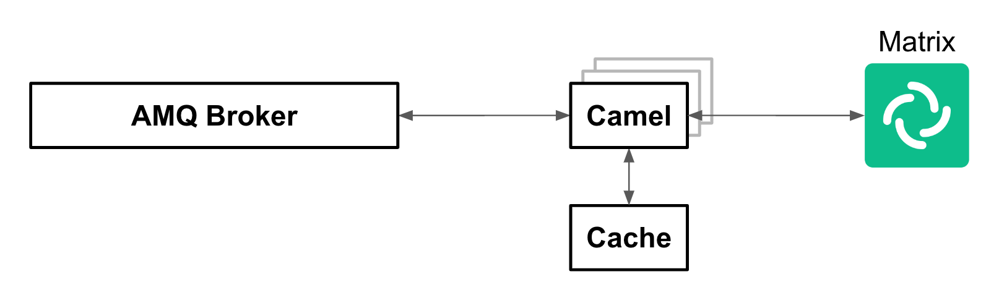
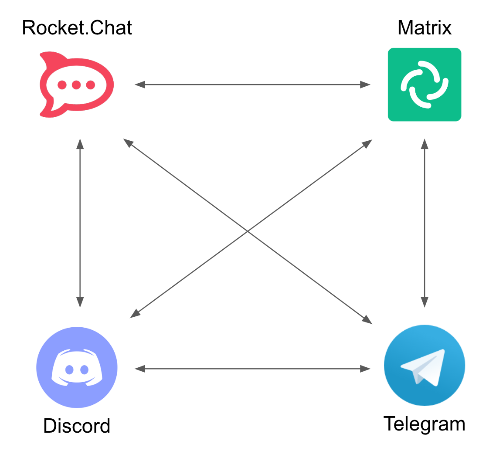
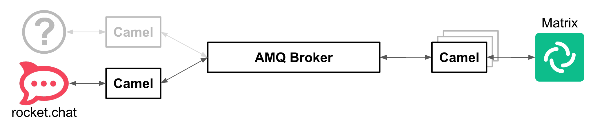
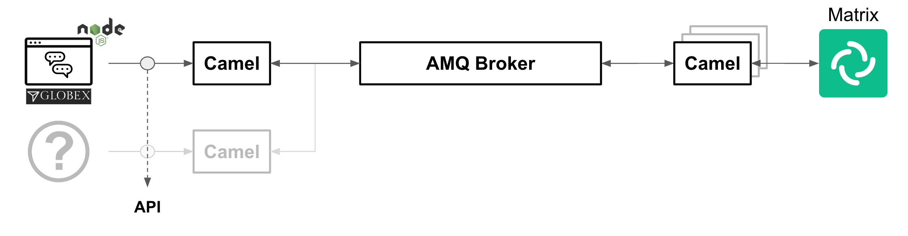
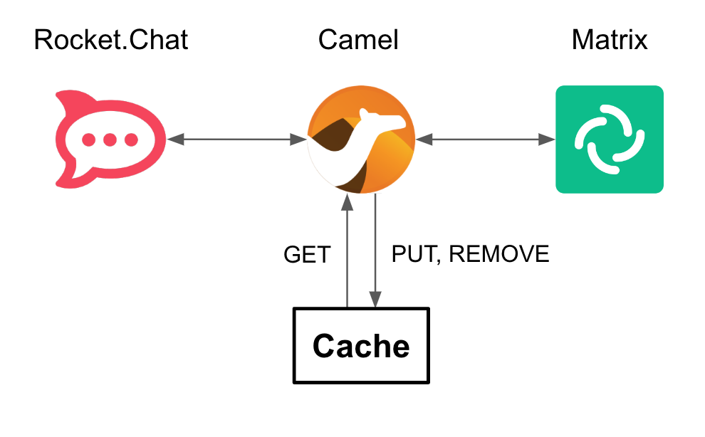

Solution Pattern: Build an extendable Multi-Channel Messaging Platform
Architecture
1. Common Challenges
To better explain and detail the reasons for the existence of this solution pattern we’ll picture some common needs and challenges amongst organizations that already have production systems and seeks innovation and modernization.
-
Complex connectivity to enable end to end communication flows
-
Continuous organisational changes and acquisitions constantly changing the landscape of communication parties.
-
Fast changing communication trends between users and providers.
-
Data retention policies in communications.
-
Compliance with government regulations, data privacy and security.
2. Technology Stack
Red Hat® OpenShift® Container Platform, Red Hat OpenShift Data Foundation, Red Hat Application Foundations, and other tools can help automate the workflow of data ingestion, preparation, and management building data pipelines for hybrid cloud deployments that automate data processing upon acquisition.
-
Red Hat Application Foundations
-
Red Hat build of Apache Camel: Utilize the integration capabilities of Apache Camel and its vast component library in the Quarkus runtime, optimizing for peak application performance with fast start up time.
-
AMQ Broker: Pure-Java multi-protocol message broker. It’s built on an efficient, asynchronous core with a fast native journal for message persistence and the option of shared-nothing state replication for high availability.
-
AMQ Streams: Based on the Apache Kafka project, AMQ Streams offers a distributed backbone that allows microservices and other applications to share data with extremely high throughput and extremely low latency.
-
Red Hat Data Grid: An intelligent, distributed caching solution that boosts application performance, provides greater deployment flexibility, and minimizes the overhead of standing up new applications.
-
3. An in-depth look at the solution’s architecture
The complete architecture diagram below illustrates all the technologies at play providing a pluggable and scalable platform.
3.1. Diagram overview
The diagram above is divided in 2 blocks:
-
The top group hosts all IM (Instant Messaging) platforms showcased in the demo, plus their associated integration processes (with Apache Camel) to plug in to the architecture. Also included in the same namespace you’ll find AMQ messaging technologies (AMQ Streams and AMQ Broker).
The picture would look different if applying the solution pattern to external messaging platforms such as Slack, Discord or WhatsApp. Whether internally or externally hosted, the core architecture would remain the same, their location is just a technical detail. -
The bottom group is dedicated to host API driven applications that plug in the architecture. Their respective Camel integrations are co-located with them. Also included you’ll find additional Red Hat capabilities such as Data Caching (with Data Grid) and Object Storage (S3 with OpenShift Data Foundation) to support the architecture’s needs (more detail below).
The sections below further detail the characteristics of this architecture.
3.2. Scalability
Under increasing volumes of traffic, the architecture is conceived to allow each individual component to scale horizontally.
For example, let’s assume the aggregation of input channels results in an increased overall output towards the agent’s platform where the support team attends customers. We are referring to Matrix in the diagram below (could also be Discord, WhatsApp or similar).

We trust the target IM platform’s scalability capabilities under big volumes of traffic. Popular platforms are known to handle millions of messages per second. From our platform’s perspective, we can scale the Camel integration to Matrix by increasing the number of replicas. All Camel instances subscribe to the same queues in the AMQ platform. AMQ load-balances (by design) all the traffic between available subscribers and Camel forwards messages to the target platform using their scalable client API specification.
In the same diagram above you’ll see Red Hat Data Grid (Cache) acting as a backing capability to support and help correlate asynchronous communications between customers and support agents. Data Grid is extremely scalable by design and fit for cloud-native environments.
The same is true for Red Hat AMQ, used in the architecture is the underlying asynchronous messaging capability to decouple the architecture as per the section that follows.
In summary, all the components shown in Figure 1 plug and behave with scalability in mind.
3.3. Decoupled Architecture
Connecting data sources and destinations is not a trivial challenge, particularly when the number of integrations grows.
For simple one-to-one flows, a single process can handle the data mappings required for both request and response directions. Data needs to be translated from the origin’s data format to the target’s data format.
However, things get complex, exponentially fast, when we start plugging in source and target systems. This is due to the cross data translations required between all different systems.

In the diagram above, a one-to-one strategy renders the architecture unable to cope as new systems are added to the platform. Every system requires to be translated to every other system.
To solve this complexity, the architecture is decoupled by introducing asynchronous messaging with Red Hat AMQ and adopting a star configuration, as the figure below illustrates.
The strategy to transform data between all participant systems in the platform is to adopt a common data schema that mediates between all of formats, reducing the number of data mappings to a manageable degree.
The diagram above illustrates source messages (In) in their original format, then transformed in the common format and placed in the message broker (AMQ), and finally converted to the target format (Out) when sent to the destination system.
3.4. Extensibility
A decoupled approach makes the platform very easy to extend. Once you have defined the common schema as a means to interface with other systems, adding new ones to the platform becomes almost effortless.
For example, if the platform wants to be extended to include a popular IM platform, all that is required is to define the integration piece that translates IN/OUT messages to/from the common schema.

In the above diagram, the (?) system represents the new IM platform to be plugged in. Connecting and integrating using Camel, as represented in the picture, supposes no impact or additional changes in the existing platform.
The solution’s demo also integrates the Globex’s Web portal (see below), where an embedded Chat widget uses an API to connect to the platform via a Camel integration.
Similarly, if you wanted to extend the platform to include new API-based channels or services, adding them in would be straight-forward.

In the picture above, the (?) system represents the new system added in and connecting via an API exposed by a Camel system.
3.5. Caching
One crucial component in the architecture is Red Hat Data Grid, which is based on the open source project Infinispan.
Data Grid provides caching capabilities. In the context of this Solution Pattern, because it has a decoupled architecture and is event-driven, events freely flow in a non-blocking manner with no active waits for responses. Processes consume these events and react to them by firing new events/messages.
Caching provides the capability to temporarily store the context of these communications. Apache Camel can retrieve contextual information from Data Grid to correlate the information.

The picture above represents the role of Apache Camel and Data Grid to perform customer/agent context read/writes.
To illustrate the different stages of a support interaction between a customer an an agent, the following actions take place:
-
When a new customer/agent session starts there is initially no context available, one has to be created. This is done with a PUT operation.
-
Agents attend customer queries from their IM platform (Matrix) by responding in their chat window. Camel finds out how to connect the response message to the originating customer by obtaining the contextual information from the caching layer. This is done with a GET operation.
-
More GET operations are performed, while both customer and agents exchange messages, to route the traffic back and forth.
-
When the case is resolved, Apache Camel receives a signal and closes the conversation with a series of actions, including the context removal from Data Grid. This is done with a REMOVE operation.
3.6. Transcript Archiving
A requirement the solution pattern also covers is the capability to persist communication exchanges. By doing so, additional capabilities can be factored in to implement extra requirements, for example to meet data retention policies or to comply with government regulations to satisfy security and data privacy measures.
A key capability in the solution is AMQ Streams (Kafka). For every exchange traversing the platform, copies are sent to Kafka.
Looking more in detail into the different stages included in the architecture we find the processes writing conversations into object storage.

Kafka is used to replay customer/agent messages. The figure above shows traffic directed to kafka and consumed, processed and persisted by Camel.